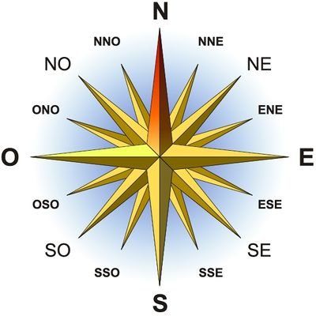
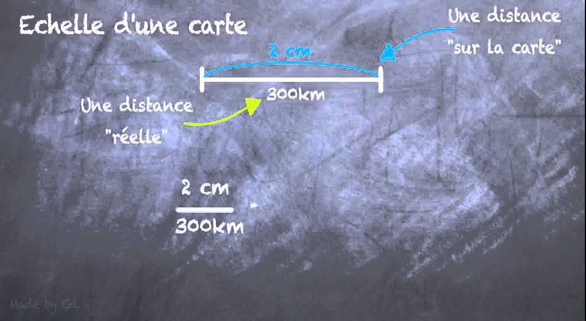
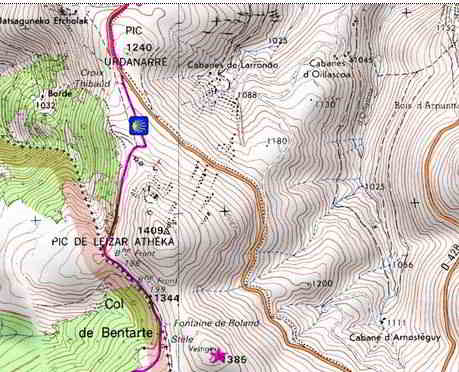

La topographie est l'ensemble des techniques d'orientation et de déplacement, que ce soit sur carte ou
sur le terrain, avec ou sans outils. Pourquoi s'orienter ? Déjà pour ne pas se perdre et surtout pour
pouvoir se rendre à un point précis. Bien sûr on a les GPS, les téléphones. Mais quand internet ne capte
pas, qu'on a plus de batterie, qu’on n’a pas de téléphone ou plus de forfait... Mieux vaut savoir s'y
prendre sans la technologie !
Etape 1 : Utiliser une carte
La rose des vents

Elle représente les 4 .…(1)…. que sont le Nord, le Sud, l'Ouest et l'Est. C'est elle qui permet
de comprendre une carte et les directions.
On lit le Nord N, le Sud S, l’Est E et l’Ouest O. Elle montre 4 directions, mais si on trace les
bissectrices on obtient des ….(2).… encore plus précises que sont le NE / ... (3).../ SE / SO.
Là encore on peut redécouper pour obtenir NNE. Le NNE est alors entre le …(4)... et le …(5)...,
c’est très précis.
Etape 1 : Utiliser une carte
La carte topographique
La carte topographique est la reproduction sur une carte des formes du terrain avec ses détails. Plus
l’échelle d’une carte topographique est petite, moins les détails seront précis. Grâce aux signes sur
une carte topographique, tu as vite fait de retrouver une route, une rivière ou un joli point de vue à
ne pas manquer.
Etape 1 : Utiliser une carte
La carte : les grands principes
Quand tu lis une carte, il faut absolument que tu penses à ces principes :
Le Nord est l’élément essentiel de l’orientation !
Il commande tout le reste car si tu trouves le nord, avec la rose des vents, tu trouves les autres
directions. Et surtout, toutes les cartes sont orientées vers le Nord.
Il faut savoir qu’il existe deux types de Nord : le Nord géographique (qui correspond au Nord sur ta
carte) et magnétique (qui correspond au Nord de la terre). Sur de longs voyages cela peut faire dévier
si on ne prend pas cela en compte. Pour une petite randonnée, ça ne change rien !
Le quadrillage est présent sur toutes les cartes.
Il est très utile et tu ne dois pas hésiter à t’en servir. Il est droit et tu peux donc caler ta
boussole le long d’une ligne pour être sûr(e) de la direction à prendre.
Etape 1 : Utiliser une carte
La carte : la légende
Pour te repérer avec une carte, tu dois toujours avoir en tête leur fonctionnement qui est toujours le
même. Tu pourras alors lire au mieux la carte et surtout prévoir le type de reliefs que tu vas croiser
et la distance que tu vas faire.
L’échelle te permet de lire la carte et d’évaluer les distances.
C’est le rapport mathématique entre une longueur sur la carte et la longueur réelle sur le terrain.
Elle s'exprime par une fraction où le numérateur représente la longueur sur la carte et le dénominateur
représente la longueur réelle sur le terrain. Par exemple, si tu lis 1 : 25000 ça veut dire qu’un
centimètre sur ta carte correspond à 25 000 cm dans la réalité.
Une autre manière d’écrire l’échelle sur une carte est de tracer un trait d’un certain nombre de
centimètres et d’écrire à quelle distance la longueur du trait sur la carte correspond dans la réalité.
Tu peux en voir un exemple ci-contre.

Si aucune échelle n’est notée sur la carte, c’est qu’elle est en taille réelle.
Le quadrillage est présent sur toutes les cartes.
Il est très utile et tu ne dois pas hésiter à t’en servir. Il est droit et tu peux donc caler ta
boussole le long d’une ligne pour être sûr(e) de la direction à prendre.
Etape 1 : Utiliser une carte
La carte : la légende
Les dénivelés sont représentés par des cercles concentriques.
Ce sont des lignes imaginaires (vous ne les verrez pas sur le terrain) qui permettent de représenter le
relief sur une carte IGN. Quand on sait lire les courbes de niveau, on peut connaître son altitude, mais
aussi le profil d’un itinéraire (si ça va monter ou descendre) et même connaître les cols, les sommets,
les crêtes etc….
Dans la légende, il est noté à combien de dénivelé correspond la distance entre 2 cercles. En comptant
le nombre de cercle et en multipliant ce nombre par le dénivelé correspondant, tu pourras savoir combien
de mètres vont être montés ou descendus.

Pour savoir si tu vas monter ou descendre, regarde les informations sur la carte. Si tu vois de l’eau en
général, cela correspond à un des niveaux les plus bas de la carte. Si tu vois un chiffre indiquant le
long d’un trait, le haut du dénivelé correspond au haut du chiffre.
Etape 1 : Utiliser une carte
La carte : la légende
Lire les informations données par la carte
Tout d’abord, les couleurs sur une carte te donnent des indications : le vert correspond à de la
végétation, le bleu à de l’eau, le marron à des montagnes, le noir est utilisé pour les chemins, les
constructions et les noms des lieux et l’orange pour le relief du terrain.
Pour comprendre à quoi correspond chaque symbole sur la carte, un petit jeu s’offre à toi. Associe à
chaque image le nom qui correspond à la description de ce que tu vois.
Pour apprendre à utiliser une boussole, regarde la vidéo ci-dessous :
Etape 2 : Utiliser une boussole
La boussole : Pour suivre un cap, il faut parfois s’en détourner
Nous te proposons une petite expérience. Tu es sûrement assis(e) dans une pièce. Fixe un endroit dans la
pièce, à l’opposé de là où tu es. Ton objectif, en faisant une ligne droite, rends-toi à l’endroit que
tu as fixé. Si tu croises des obstacles, (et que tu peux les passer en toute sécurité), ne dévies pas de
ta direction. Une fois l’expérience réalisée, clique sur suivant.
Etape 2 : Utiliser une boussole
La boussole : Pour suivre un cap, il faut parfois s’en détourner
Ton expérience est terminée. Tu sais qu’il est souvent plus rapide de rejoindre un point en faisant une
ligne droite. Mais, parfois, comme tu as dû l’observer, il y a des obstacles sur ton chemin… Dans ce
cas-là, il est plus simple et plus rapide de s’en détourner.
Avec la boussole, c’est pareil. Quand on te donne un azimut, il est possible que tu rencontres un
obstacle et que tu doives t’en détourner. En changeant le cap temporairement, tu peux arriver dans la
visée du cap initial en toute sécurité et rapidement.
Etape 2 : Utiliser une boussole
La boussole : construire une boussole maison
Si tu as le matériel chez toi, réunis :
Un bol d’eau
Une épingle ou une aiguille à coudre
Un aimant (que tu peux trouver sur ton frigo), ou si tu n’en as pas ce n’est pas grave, tu peux
quand
même faire l’expérience
Un petit morceau de liège ou quelque chose qui flotte
Suis les étapes:
Coupe un petit cercle dans un matériau qui va flotter dans l’eau : un bout de liège, un bout de
bouteille ou de brique de lait…
Ensuite, transforme l’épingle en aimant : pour cela, frotte l’épingle sur l’aimant une trentaine de
fois. Frotte toujours dans le même sens pour magnétiser l’épingle.
Verse de l’eau dans un bol, place l’aiguille sur le support flottant et le tout sur l’eau. L’aiguille va
tourner et ralentir pour finir dans la direction Nord-Sud. Le test marchera normalement même si ton
aimant n’est pas très puissant.
Astuce : Si tu n’as pas d’aimant, frotte l’aiguille dans tes cheveux, en faisant attention (fais le
doucement et avec personne autour pour te bousculer). Avec l’électricité statique, ça marchera
normalement.
Comment ça marche?
Chaque aimant a un pôle sud et un pôle nord. L’aiguille d’une boussole est un petit aimant qui va
s’aligner avec les pôles magnétiques de la Terre (qui sont proches pôles géographiques). En frottant une
aiguille sur un aimant, on la rend magnétique et en la plaçant sur un support flottant, on lui permet de
s’aligner avec les pôles Nord et Sud.
Etape 3 : Se repérer quand on est perdu
Quand tu es perdu(e) dans la nature, il y a plusieurs moyens pour toi de retrouver où tu es.
Une des solutions, la plus facile est de monter (monter une pente, chercher un point plus haut,
accessible autour de toi), pour voir, depuis ce point en hauteur ce qu’il y a autour de toi et essayer
de te repérer.
Etape 3 : Se repérer quand on est perdu
Une autre solution pour essayer de te repérer, si tu ne peux pas aller en hauteur, est d’observer ce
qu’il y a autour de toi, de réfléchir à ce que tu as vu sur le chemin pour en arriver là. A partir de là
essaies de te repérer sur la carte et si tu n’y arrives pas essaies de rebrousser chemin pour trouver un
point remarquable à retrouver sur la carte.
Etape 3 : Se repérer quand on est perdu
Si tu as une boussole et une carte sur toi, tu peux utiliser la triangulation. Pour cela :
Cherche autour de toi 2 « points remarquables » que tu es sûr de trouver sur la carte (hauteur,
église, rivière).
Mesure leurs azimuts par rapport à toi et note-les.
A la boussole, calcule les contre-azimuts (azimuts inversés). Pour cela, si l’azimut est inférieur à
180°, on lui ajoute 180°. Et s’il est supérieur, on lui retire 180°. En + : le contre-azimut est
l’azimut qui te permet de revenir sur tes pas.
Sur la carte, on centre la boussole sur chacun des points et on trace une ligne sur le contre azimut
voulu. (Fais la ligne pour chacun des points avec leur contre azimuts respectifs)
Les 2 lignes se croisent à un endroit, c’est TOI sur la carte tu n’es pas perdu(e) !
Pour être certain(e), positionne sur la carte, à l’endroit où tu es, la boussole et mesure les
azimuts vers les 2 points, tu es sensé(e) retrouver les azimuts initiaux.
Etape 3 : Se repérer quand on est perdu
Teste la triangulation, à la maison
Sur un papier dessine un rectangle de 5 cm sur 7 cm.
Mets le papier tel que le rectangle soit en format paysage devant toi.
En bas, à droite, fais une rose des vents avec le nord vers le haut comme sur le dessin suivant.
Dessine une croix à 6 cm du bord gauche et 1 cm du haut de ton rectangle. Et dessine un point à 2 cm
du bord gauche et 2cm du haut de ton rectangle. (l’exemple ci-dessous n’est pas à l’échelle).
Le point et la croix correspondent aux 2 points remarquables que tu as.
Par rapport à toi, la croix est à un azimut de 25° et le point à un azimut de 317°. Calcule leur
contre-azimut.
Si tu as une boussole, positionne-la sur le centre de la croix et trace un trait en direction du
contre-azimut que tu as calculé, jusqu’au bord de ton cadre (fais attention à bien positionner le
nord).
Fais ensuite la même chose pour le point.
Si tu as un rapporteur, fais nous confiance, place le centre du rapporteur sur la croix et l’arrondi
du
rapporteur avec les graduations de 0 à 180° vers le haut. Mesure 63° et laisse une marque. Enlève
ton
rapporteur et trace une droite passant par le centre de la croix et le point que tu viens de faire.
Ta
droite doit être tracée jusqu’au bord du cadre. Fais ensuite la même chose pour le point en
utilisant un
angle de 40°.
Là où les 2 droites que tu as tracées s’intersectent, c’est là où tu es. Vérifie qu’en ce point tu
as
bien un azimut de 25° pour rejoindre la croix et un azimut de 317° pour rejoindre le point.
Si tout te paraît bon, prends ton dessin en photo et charge le ci-dessous pour qu’on puisse vérifier
et te valider l’activité.